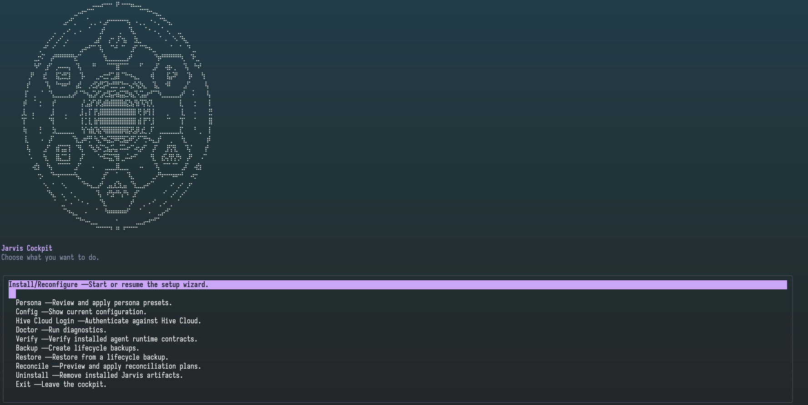

El recorrido · diez capítulos y fuentes para profundizar
01 / La idea en una frase
Que el contexto no se vaya de vacaciones.
Jarvis Dev da continuidad al desarrollo asistido por IA: configuración consistente, memoria de proyecto y cambios con un plan verificable.
No es otro chatbot.
Es una capa de trabajo alrededor de tus herramientas: preparar, recordar, compartir cuando toca y verificar antes de dar por hecho.
La IA cambia de sesión. El proyecto sigue.
El valor está en recuperar el porqué, no en pedir a todo el equipo que vuelva a contar la película.
Menos arqueología improvisada. Más decisiones recuperables.
Las historias de esta presentación son ilustrativas. Las capacidades operativas tienen sus fuentes al final.
02 / Escena ilustrativa · un lunes cualquiera
«¿Quién escribió esto?»
«Ah. Yo.»
El código sigue ahí. Tu recuerdo del motivo, no tanto.
Encuentras un límite raro en un reintento. Git te cuenta quién cambió la línea; necesitas entender qué problema evitaba.
Una conversación desaparecida no es una estrategia de documentación. Tampoco lo es «seguro que me acuerdo».
Guardar la decisión hoy es dejar una pista útil para mañana.
03 / Hive · memoria local primero
Tu yo del futuro merece una nota.
REGISTRAR
Lo que importa, con su motivo
«Limitamos los reintentos porque el proveedor duplica cargos. Revisar idempotencia antes de subir el límite».
Ejemplo ficticio de memoria; no es un incidente documentado.
RECUPERAR Y CONTRASTAR
Retomar sin empezar de cero
Buscar esa decisión orienta la lectura del código y los tests actuales. Una nota puede estar desactualizada: se contrasta, no se obedece a ciegas.
Hive conserva contexto registrado: decisiones, causas de bugs, convenciones y, cuando es el almacén elegido, artefactos SDD.
Con hive-daemon en marcha, la memoria local no necesita que el servidor compartido esté disponible. No ingiere automáticamente cada cambio del repositorio.
Cómo abrir ese contexto local
jarvis hive
jarvis timeline --project <proyecto>La TUI y la vista temporal local requieren el daemon; la segunda exige un proyecto explícito. No son una vista temporal de desarrolladores en el dashboard.
Guía de memoria local04 / Escena ilustrativa · incidente de equipo
La alerta ha llegado.
La persona que sabe, no.
No necesitamos telepatía. Necesitamos contexto compartido.
- Recuperamos una nota sobre el cambio de invalidación y su motivo.
- Acotamos la investigación: configuración, invalidación y pruebas relacionadas.
- Contrastamos con logs y código; probamos la hipótesis y registramos lo aprendido.
La memoria ayuda a elegir dónde mirar. No descubre por sí sola la causa ni garantiza resolver el incidente.
Compartir conocimiento reduce dependencia de una persona. No sustituye a la guardia.
Qué tiene que estar preparado antes
Hive API configurada, credenciales válidas y daemon local. El equipo acuerda qué conocimiento puede compartirse. mem_sync mueve memoria; la sincronización en segundo plano requiere habilitación explícita. Instalar Jarvis no activa una compartición universal.
05 / Poner nombre a las piezas
Jarvis es el ecosistema.
Nexus, la identidad.
Nexus Hive es el dashboard de la memoria compartida. No son tres servicios independientes con tres promesas distintas.
PREPARAR Y GUIAR
CLI + flujo SDD
Configuración de herramientas, diagnóstico y una ruta para planificar, implementar y verificar cambios.
DAR CONTINUIDAD
Hive local
Memoria de proyecto en tu máquina, servida por el daemon. Trabajo local primero.
COMPARTIR E INSPECCIONAR
Hive API + Nexus Hive
Servicio compartido y dashboard opcional cuando se despliegan y configuran.
Herramientas coherentes → contexto registrado → cambios trazables.
Una elección visible en la configuración

06 / Escena ilustrativa · el iceberg del alcance
«Es solo un botón.»
LO QUE SE VE
Un rectángulo, una etiqueta y mucho optimismo.
LO QUE APARECE AL EXPLORAR
- Permisos y datos que pueden salir.
- Volumen, formatos y procesamiento.
- Errores, auditoría y pruebas.
- Compatibilidad y operación.
El problema no es el botón. Es empezar a implementar antes de decidir qué significa «exportar».
SDD convierte «ya que estamos…» en una decisión de alcance.
07 / Spec-Driven Development
Pequeñas entregas.
Intención grande y clara.
SDD es un flujo guiado: definir comportamiento antes del código y conservar evidencia después.
1 · ENTENDER Y ACORDAR
¿Qué vamos a entregar?
Explorar, proponer, especificar y diseñar. Por ejemplo: exportación limitada, permisos explícitos y exclusiones conocidas.
2 · DIVIDIR Y APLICAR
¿Qué puede revisarse?
Tareas acotadas con criterios observables. El siguiente «ya que estamos» vuelve a la conversación de alcance.
3 · VERIFICAR Y ARCHIVAR
¿Qué demuestra que funciona?
Comparar con lo acordado, recoger pruebas y guardar el conocimiento para la próxima sesión.
Un plan no garantiza buen código. Hace visible qué hay que demostrar.
El ciclo completo, sin convertirlo en una pared de siglas
Init → Explore → Proposal → Spec → Design → Tasks → Apply → Verify → Archive. La activación es deliberada, con decisiones previas sobre almacenamiento, ejecución y entrega; Hive es el almacén por defecto salvo elección explícita de otra modalidad.

08 / Nexus Hive · dashboard opcional
La memoria del equipo,
a la vista.
Pasar de «creo que alguien lo guardó» a inspeccionar el conocimiento compartido.
Memorias y conocimiento por proyecto, usuarios, actividad, auditoría y cuarentena: superficies para revisar datos y operar el servicio según los permisos del despliegue.
No sustituye los logs del incidente ni la revisión del código. Ayuda a consultar y supervisar la memoria que sí se ha registrado.
El motivo también cuenta.
Limitar reintentos
Consultar el contexto → contrastar con el estado actual.
Superficies disponibles y dirección futura
Vistas disponibles:
Grafos, analítica, contribuyentes, vista temporal de desarrolladores y conflictos están diferidos; no se presentan aquí como capacidades disponibles. El acceso y las funciones administrativas dependen del despliegue y sus permisos.
Seguridad, acceso y gobernanza09 / Configuración reproducible y diagnóstico
«En mi máquina…»
con algo más que fe.
La CLI prepara una base común y ofrece diagnóstico. La configuración generada se regenera desde sus fuentes, no se parchea a mano.
Observar
jarvis verify comprueba; jarvis doctor diagnostica y propone un plan. No reparan en silencio.
Reparar desviaciones
jarvis reconcile repara cambios seguros en configuración gestionada, con copia previa y verificación posterior. Lo ambiguo exige revisión.
Reaplicar lo registrado
jarvis sync reproduce la configuración deseada de esta máquina. No mueve memorias; eso corresponde a mem_sync o al daemon configurado.
Ver la entrada al setup y seguir una ruta operativa

jarvis
jarvis verify --provider all
jarvis doctor --provider allRevisa el plan antes de una reparación. Credenciales fuera del repositorio; HTTPS y permisos adecuados para el servicio compartido.
Guía de diagnóstico y recuperación · Instalación10 / La siguiente conversación
Ya lo estamos usando.
Ahora, dejemos evidencia.
Dos compañeros ya están probando el ecosistema. El siguiente paso es documentar esa experiencia y medir su impacto.
Experiencia declarada; fechas, plataformas, resultados y tiempos todavía pendientes de registrar.
Qué observar
- Setup comprobado y diagnósticos entendibles.
- Contexto registrado que se recupera y resulta útil.
- Alcance, tareas y evidencia revisables.
- Equipo capaz de explicar qué queda local y qué se comparte.
Qué documentar
- Cómo lo utilizan ambos compañeros.
- Qué conocimiento registran y recuperan.
- Configuración local y compartida realmente utilizada.
- Criterios de éxito y evidencia antes de ampliar.
No prometamos un porcentaje. Midamos si el contexto ayuda.
Eficiencia: una hipótesis que se puede medir
Reutilizar contexto registrado de forma selectiva puede evitar repetir explicaciones. SDD y la persistencia también añaden trabajo y consumo; no hay aquí un ahorro de tokens demostrado.
Compara tareas equivalentes con el mismo modelo y criterios de resultado: cuenta el total de tokens de entrada, salida y caché, las llamadas y el consumo de herramientas, además de la calidad final y el esfuerzo de revisión. Incluye el coste de registrar, buscar y verificar, no solo la última respuesta.
Criterios para evaluar la experiencia · Adopción por etapasQue el próximo «¿quién escribió esto?» termine en una decisión recuperada, no en otra expedición arqueológica.
Apéndice / Para continuar y comprobar
La historia engancha.
Las fuentes sostienen.
Procedencia visual y alcance de la evidencia
Las tres imágenes PNG son copias sin alterar de docs/presentaciones/capturas/: WizardTUI.png, SeleccionHiveMode.png y SDDModelConfigs.png. Se incluyen en jarvis-ecosystem-assets/ para que este documento no dependa de otras guías. No documentan una ejecución realizada para esta presentación.
Paleta y emblema N inspirados en las guías de onboarding del repositorio; superficies y gradiente en styles.css del dashboard. Las viñetas y el esquema del dashboard son ilustraciones originales en HTML, no capturas. Sin recursos remotos ni reproducción del vídeo de referencia.
Esta presentación no sustituye una demostración ensayada ni un dossier de evidencia real. No afirma retornos medidos, tiempos de resolución ni certificaciones de plataforma.